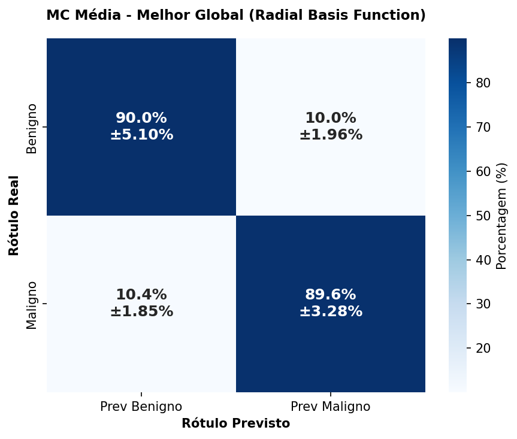
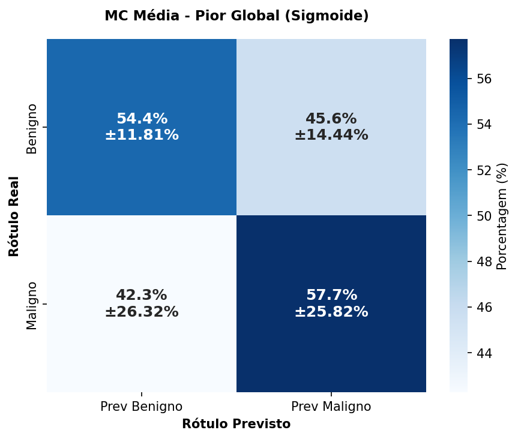
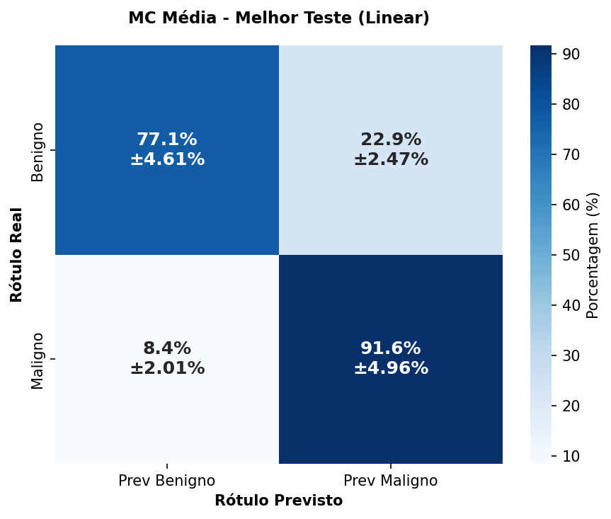
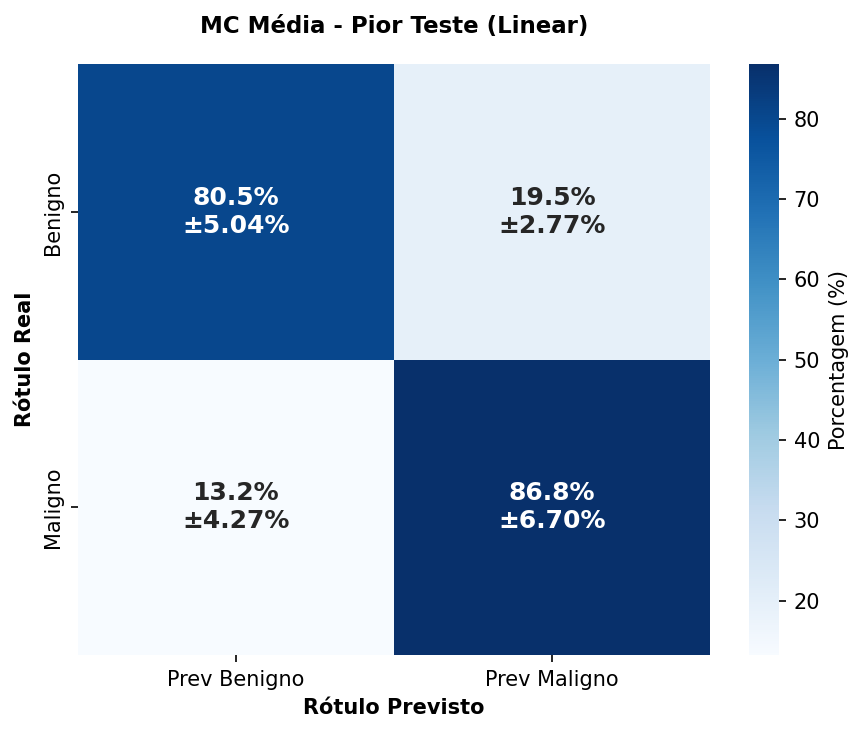
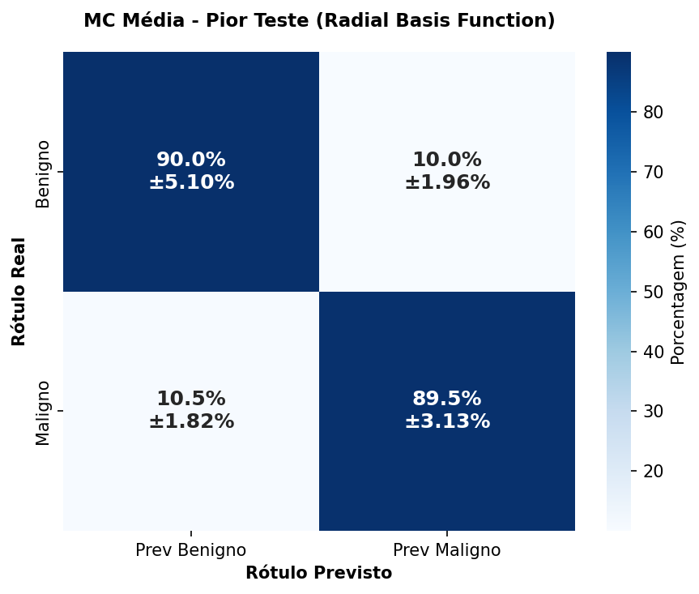
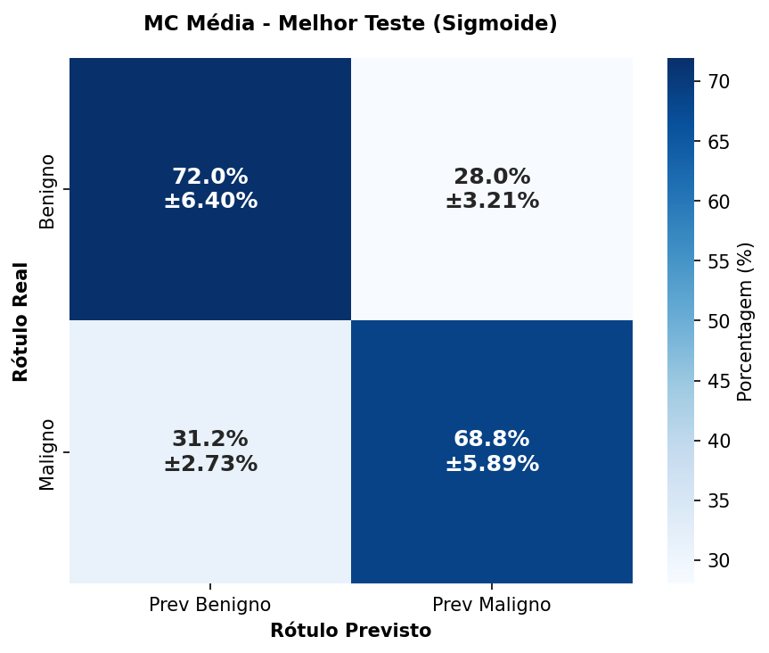
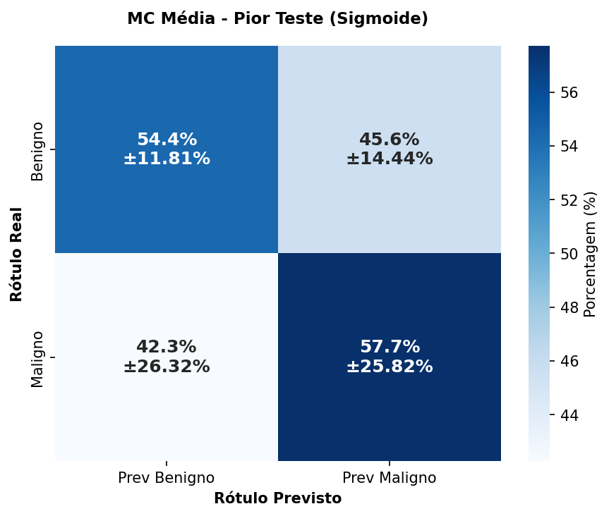

SVM - Avaliação de Parâmetros
Acurácia de Teste é a métrica principal para os resultados


Resumo por Kernel
- Config (C, γ):C=1000, γ=0
- Acc Treino:88.22% ± 0.56%
- Acc Teste:86.66% ± 1.22%
- Tempo Treino:29.7393s
- Tempo Teste:0.0804s

- Config (C, γ):C=1, γ=0
- Acc Treino:87.64% ± 0.72%
- Acc Teste:86.55% ± 0.65%
- Tempo Treino:0.7918s
- Tempo Teste:0.0476s

- Config (C, γ):C=1000, γ=1
- Acc Treino:92.24% ± 0.23%
- Acc Teste:90.40% ± 1.21%
- Tempo Treino:0.9809s
- Tempo Teste:0.2092s
- Config (C, γ):C=1, γ=1
- Acc Treino:92.14% ± 0.22%
- Acc Teste:90.35% ± 1.16%
- Tempo Treino:0.9715s
- Tempo Teste:0.3093s

- Config (C, γ):C=1000, γ=1
- Acc Treino:77.92% ± 0.23%
- Acc Teste:77.95% ± 0.89%
- Tempo Treino:0.9512s
- Tempo Teste:0.0716s

- Config (C, γ):C=1, γ=1
- Acc Treino:24.66% ± 0.21%
- Acc Teste:24.68% ± 0.95%
- Tempo Treino:2.5814s
- Tempo Teste:0.2789s

🔍 Diagnósticos Automáticos
Linear
Modelo estável com acurácia decente (86.7%).
Tente um Grid Search com passos menores.
Radial Basis Function
Performance Excelente (90.4%) com detecção balanceada.
Modelo adequado para produção.
Sigmoide
Alta Taxa de Falsos Alarmes
FPR é 25.6%. Muitos arquivos seguros marcados como vírus.
Ajustar Gamma ou Pesos de Classe Negativa.
Polinomial
Descartado (Muito Lento)
Pulado: Est: 1h 6m.
Reduza o tamanho do dataset, use poda ou aumente o limite de tempo.
📊 Guia: Entendendo o Desvio (±)
Altamente Estável. O modelo produz resultados consistentes independente de como os dados são divididos. Confiável para produção.
Variância Aceitável. Comum em datasets menores. Mostra leve sensibilidade a amostras específicas de dados.
Instável. A performance do modelo flutua drasticamente. Pode estar sofrendo de Overfitting em partes específicas dos dados.
🛡️ Relatório de Vazamento de Dados
Análise automática de features suspeitas (Correlação ~1.0).
Nenhuma feature suspeita foi encontrada. O dataset parece livre de vazamento de dados óbvio.
Se uma feature tem correlação 1.0, o modelo "trapaceia" usando apenas essa feature e ignorando o resto. Ao removê-la ("Lista Suja"), forçamos o SVM a aprender padrões reais, fornecendo uma pontuação de acurácia realista ao invés de um falso 100%.